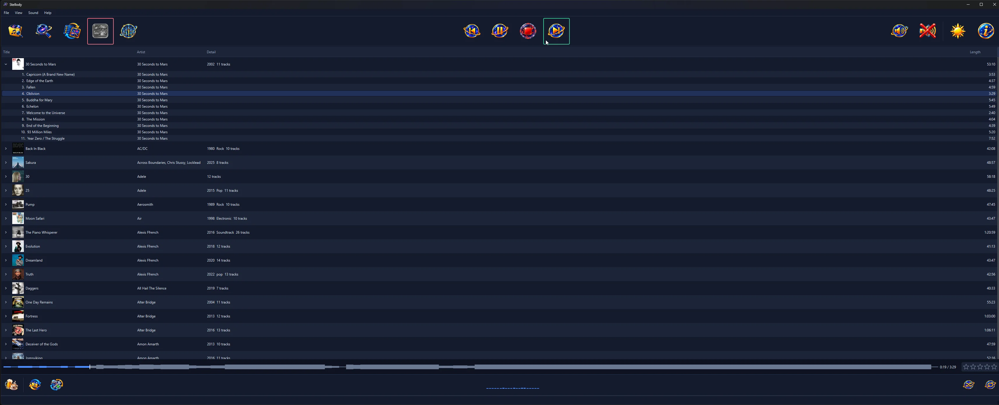

The whole list, in plain words. Where something is not built yet, it is said here rather than left out and discovered later.
Choose your music folder once. When you add an album afterwards, press Rescan: Stellody looks only at what has actually changed, so it finishes in a moment rather than reading everything again.
When a scan finishes you get a report rather than a message that vanishes: the new albums by name, how many new tracks came with them, then the totals for your whole collection. Albums that have stopped being found are listed too, since an unplugged drive looks just like a folder you renamed. A scan that finds nothing new says exactly that.
Stellody trusts how your music is actually filed. Sorting by the labels inside the files was tried and it fell apart on classical music, splitting a single Mozart recording into five different albums. Your folders know better, so your folders decide.
A double album filed as CD1 and CD2, else as Disc 1 and Disc 2, shows up as the one record it really is rather than as two strangers sitting next to each other.
Stellody skips a short, fixed list of folders that Windows and macOS create for themselves. It never guesses that something looks unimportant, because an early version guessed and swallowed two real albums.
A collection built over years is rarely all one format, so Stellody reads the common ones and treats them alike: a folder of MP3s becomes an album exactly as a folder of FLACs does, with the same titles, artists, dates and track numbers read out of whatever each file happens to carry. Cover art stored inside a file is read from all of them too. M4A and WMA are the two still to come.
Every music file carries labels saying what it is: the track name, its number, the album, the artist. On a collection built over years, some of those go wrong. Stellody works out what was probably meant so your album still reads correctly, tells you what looked odd then leaves your file untouched.
The number at the front of the file name wins. Whenever labels have gone wrong, the file names themselves have stayed right.
The folder wins. A person named that folder deliberately; the label inside was written by software. One real folder holds songs claiming to be from three different discs.
The file name wins again. When something rewrites labels in bulk it tends to copy the title across along with the number.
Everything Stellody worked around is written down for you in one place, so you can go and correct it properly in whichever program you like.
Accept the whole list in one press or one album at a time; those corrections then stop being reported every time you start. Changed your mind? One press puts them back and the original list returns. Your files are untouched either way: the decision is kept in Stellody's own records.
Read your collection as a tidy list, else browse it as album art in three different sizes. Click a cover and the album opens underneath it with its songs in two columns, so you never lose your place. Click it again to close it.
Open the search box, start typing and your collection narrows with every letter. Close it and everything comes back.
Nearly seven thousand songs are searched in under half a millisecond, which is far faster than you can type. There is nothing to build first and nothing to wait for.
Find one song and its album stays as it always looks, with every other track still around it. The song you were after lights up and flashes so your eye goes straight to it.

The list view, with the play controls across the top and your settings along the bottom.
Double click a song, press Return, use the right click menu, the buttons across the top or the play button on an open album. Stellody carries on through the album by itself.
Press Back once to return to the beginning of the song you are on. Press it again to go to the one before, the way it works on a CD player.
All four are remembered for next time. Repeat has three settings rather than two: off, repeat the album, then hold the one song you are on. Shuffle reorders the album afresh each time it comes round again. Every switch shows you what pressing it would do rather than what it is doing now, so you never have to work out which way round it is.
Live recordings, concept albums and most dance records are made to run straight through with no pause between the songs. Stellody plays them that way, with no silence dropped in where the artist never put one.
A picture of the whole track runs along the bottom, showing the quiet parts and the loud ones at a glance, with a line marking where you are and the time either side of it. Click anywhere on it to jump there. It appears the instant you press play rather than making you wait.
Open it from the button at the top or the Sound menu. Take the bass up, bring the harshness down, then hear the change as you move each slider. There is a separate on and off switch, so you can compare it against the untouched sound without losing the settings you spent time on.
Plenty of players still push your music through their sound processing even with everything set to zero. Stellody does not: turned off, the audio reaching your speakers is bit for bit what is in the file. If you have good equipment, this is the difference you paid for. That holds for FLAC, WAV and AIFF, which store the sound exactly. MP3 and Ogg threw part of it away when they were made, so what reaches your speakers there is the decoder's output rather than the file itself; Stellody still adds nothing of its own to it.
Twenty bars along the bottom of the window move with whatever is playing. They line up with the ten sliders, two bars to a slider, so you can see exactly which control owns the part of the sound you are listening to. Turning the volume down does not shrink them, because they are showing you the music rather than the volume.
The bars watch the sound only after it has already gone to your speakers, so they cannot alter it even by accident. There is no switch and nothing to set up: it is simply there; it stops completely when the music does.
The stars sit at the bottom right. They follow whichever song you have selected rather than whatever happens to be playing, so you can rate something without listening to it first. Press the star it already sits on to clear the rating.
Set from the stars on the album itself, labelled so you cannot mix the two up. Neither is calculated from the other, because one weak track does not make a bad record.
Skipping through an album adds nothing to your counts, so the numbers mean something. Each song carries its own count on its row, so you can read down an album and see what you keep coming back to.
Rename or move a folder and your stars and counts follow the album rather than getting lost. Neither is ever written into your music files.
Whether the cover sits beside your music as a picture file or is tucked inside the songs themselves, Stellody finds it and remembers it. An album with no artwork gets a plain square rather than an ugly gap.
For an album with no artwork, ask Stellody to go and look. It shows you every cover it found, each labelled with the edition it came from; you pick. It will never quietly attach the wrong sleeve to your favourite record.
Once you have chosen a cover it is yours. Rescanning your collection will not quietly put the old one back.
The public archives Stellody asks are often busy. It tries several times, waiting a little longer each go, then tells you plainly that it could not get an answer rather than pretending your album has no artwork anywhere.
Same size, same place, still maximised if that is how you left it. Unplug the big monitor and Stellody still opens somewhere you can actually reach it.
Stellody can tuck itself down beside the clock and start there when you sign in, so it is ready without interrupting you. Opening it again brings your window back rather than starting a second copy.
The first time you close the window, Stellody asks whether that should tuck it away or shut it down properly. Tell it to remember and it never asks again. You can change your mind later.
One Help button at the right of the top tray drops a menu carrying About and Check for updates. The menu bar's Help menu carries both as well, along with the library health report and the two licences.